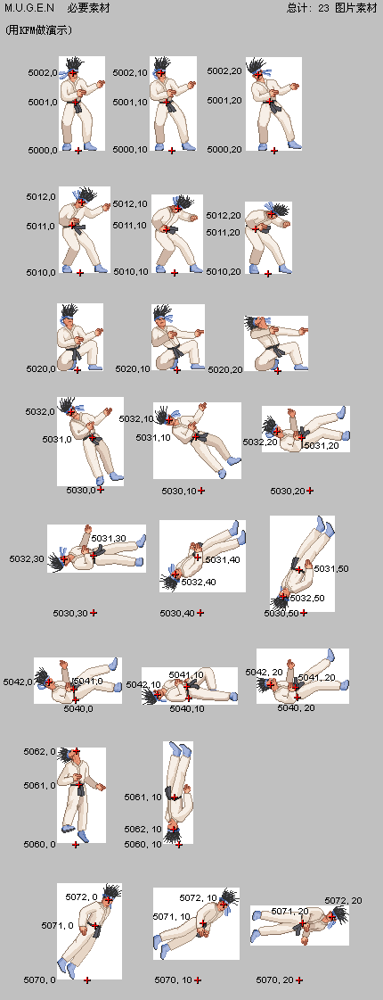

标准受击姿势
关键字: 5000 5001 5002 5010 5011 5012 5020 5030 5031 5032 5040 5041 5042 5060 5061 5062 5070 5071 5072
| 图片 | 描述 | 坐标(原点) |
|---|---|---|
| 5000,0 | 站立时被击中上部，头稍微往后 | 脚(两脚之间) |
| 5000,10 | 站立时被击中上部，头往后的幅度较大 | 脚 |
| 5000,20 | 站立时被击中上部，头往后的幅度最大 | 脚 |
| 5001,0 | 同图片 5000,0 | 中段 |
| 5001,10 | 同图片 5000,10 | 中段 |
| 5001,20 | 同图片 5000,20 | 中段 |
| 5002,0 | 同图片 5000,0 | 头 |
| 5002,10 | 同图片 5000,10 | 头 |
| 5002,20 | 同图片 5000,20 | 头 |
| 5010,0 | 站立时被击中下部，身体稍微弯曲 | 脚 |
| 5010,10 | 站立时被击中下部，身体弯曲幅度较大 | 脚 |
| 5010,20 | 站立时被击中下部，身体弯曲幅度最大 | 脚 |
| 5011,0 | 同图片 5010,0 | 中段 |
| 5011,10 | 同图片 5010,10 | 中段 |
| 5011,20 | 同图片 5010,20 | 中段 |
| 5012,0 | 同图片 5010,0 | 头 |
| 5012,10 | 同图片 5010,10 | 头 |
| 5012,20 | 同图片 5010,20 | 头 |
| 5020,0 | 蹲下时被击中，头稍微往后 | 脚 |
| 5020,10 | 蹲下时被击中，头往后的幅度较大 | 脚 |
| 5020,20 | 蹲下时被击中，头往后的幅度最大 | 脚 |
| 5030,0 | 被背后击中，头稍微往后 | 假如站立时脚的位置 |
| 5030,10 | 被背后击中，头往后的幅度很大 | 脚将在的位置 |
| 5030,20 | 被击中腹部，身体成水平 | 脚将在的位置 |
| 5030,30 | 被背后击中，身体成水平 | 脚将在的位置 |
| 5030,40 | 下落中，头稍微朝下 | 脚将在的位置 |
| 5030,50 | 下落中，头朝下幅度很大 | 脚将在的位置 |
| 5031,0 | 同图片 5030,0 | 中段 |
| 5031,10 | 同图片 5030,10 | 中段 |
| 5031,20 | 同图片 5030,20 | 中段 |
| 5031,30 | 同图片 5030,30 | 中段 |
| 5031,40 | 同图片 5030,40 | 中段 |
| 5031,50 | 同图片 5030,50 | 中段 |
| 5032,0 | 同图片 5030,0 | 头 |
| 5032,10 | 同图片 5030,10 | 头 |
| 5032,20 | 同图片 5030,20 | 头 |
| 5032,30 | 同图片 5030,30 | 头 |
| 5032,40 | 同图片 5030,40 | 头 |
| 5032,50 | 同图片 5030,50 | 头 |
| 5040,0 | 下落撞击地面 | 地平线 (例如背部) |
| 5040,10 | 躺在地上 | 地平线 |
| 5040,20 | 躺在地上时被攻击 | 地平线 |
| 5041,0 | 同图片 5040,0 | 身体中部 |
| 5041,10 | 同图片 5040,10 | 身体中部 |
| 5041,20 | 同图片 5040,20 | 身体中部 |
| 5042,0 | 同图片 5040,0 | 头 |
| 5042,10 | 同图片 5040,10 | 头 |
| 5042,20 | 同图片 5040,20 | 头 |
| 5060,0 | 被打飞，头指向上方，身体垂直 | 假如站立时脚的位置 |
| 5060,10 | 头指向下方，身体垂直 | 脚将在的位置 |
| 5061,0 | 同图片 5060,0 | 中段 |
| 5061,10 | 同图片 5060,10 | 中段 |
| 5062,0 | 同图片 5060,0 | 头 |
| 5062,10 | 同图片 5060,10 | 头 |
| 5070,0 | 被抓投，身体稍微前倾 | 假如站立时脚的位置 |
| 5070,10 | 被抓投，身体前倾幅度很大 | 脚将在的位置 |
| 5070,20 | 被抓头，身体水平，头指向前方 | 脚将在的位置 |
| 5071,0 | 同图片 5070,0 | 中段 |
| 5071,10 | 同图片 5070,10 | 中段 |
| 5071,20 | 同图片 5070,20 | 中段 |
| 5072,0 | 同图片 5070,0 | 头 |
| 5072,10 | 同图片 5070,10 | 头 |
| 5072,20 | 同图片 5070,20 | 头 |

推荐组号
| 组号 | 描述 |
|---|---|
| 0 | 站立 |
| 5 | 转身 |
| 10 | 站立到蹲下 |
| 11 | 蹲下 |
| 12 | 蹲下到站立 |
| 20 | 向前走 |
| 21 | 向后走 |
| 40 | 开始跳跃(此时还在地面上) |
| 41 | 正向上跳(上升过程中) |
| 42 | 向前跳(上升过程中) |
| 43 | 向后跳(上升过程中) |
| 44 | 正向上跳(下落过程中) |
| 45 | 向前跳(下落过程中) |
| 46 | 向后跳(下落过程中) |
| 47 | 落地 |
| 100 | 向前跑 |
| 105 | 向后小跳 |
| 120 | 开始防御(站立) |
| 121 | 开始防御(蹲下) |
| 122 | 开始防御(空中) |
| 130 | 防御(站立) |
| 131 | 防御(蹲下) |
| 132 | 防御(空中) |
| 140 | 结束防御(站立) |
| 141 | 结束防御(蹲下) |
| 142 | 结束防御(空中) |
| 150 | 防御一次攻击(站立) |
| 151 | 防御一次攻击(蹲下) |
| 152 | 防御一次攻击(空中) |
请参阅 特殊状态号